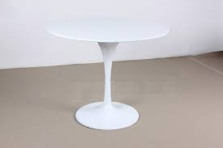
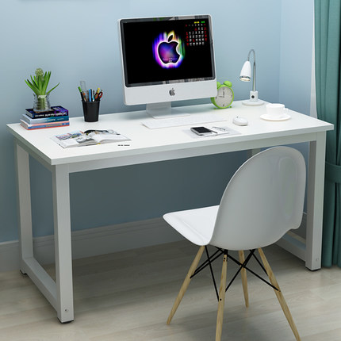
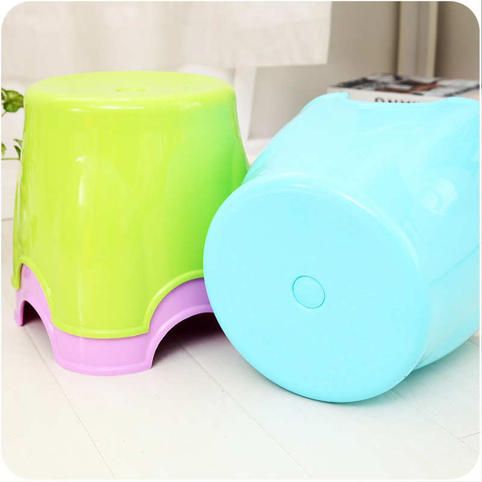
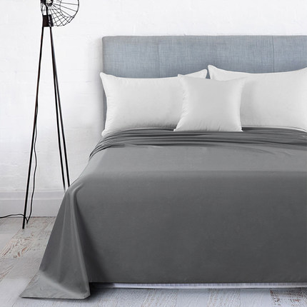

基础色就用黑和白，搭配出一种干净清爽的感觉。一些大色块，采用 #00bcd4
买桌子基本就是买黑色或者白色，曲线要有型，但是造型过于细碎的不要，直线和曲线要结合，特别白特别亮的区间放黑色桌子，特别晦暗的角落放白色桌子或者书架


一些小东西，例如墩布扫把，盆，小板凳，这些都选黑白，或者是彩色的，尽量保证一个色系和明度的。

大面积物品，如柜子，床单可以用主色，或者黑白灰，我尤其发现，黑白和各种灰色搭配可以出现很柔和典雅的效果，而且可以跟其他物品的任意的彩色配起来，非常实用。
